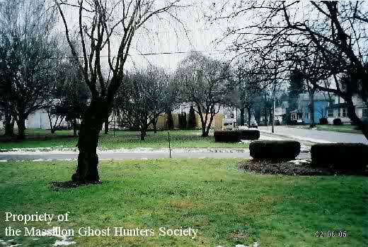

The Black Plague Cemetery Subdivision

According to various reports, including a writeup in Haunted Ohio V, a housing subdivision in Massillon was built atop the old Black Plague Cemetery--a leftover from one of the cholera outbreaks which swept across Ohio in the 1830s, 40s, and 50s. The developers did a pretty poor job of clearing out the bodies; several people have encountered coffins when digging gardens or making additions to their houses. A little girl's tombstone was found in the area. And the ghostly occurrences are fairly widespread, ranging from voices and footsteps on the second floor to actual physical manifestations.
It turns out that the location of the subdivision is a rather poorly-kept secret in Massillon. What's left of the cemetery is called Union Cemetery--two grassy lots between houses that serves are more of a memorial to the lost bodies than a resting place. To find Union, turn off Route 241 (Wales Road) onto Andrew and follow it to the place where it intersects 9th Street NE. The entrance is nearby.
Massillon Ghost Hunters: The Black Plague Cemetery Subdivision
Back
Sources
Woodyard, Chris. Haunted Ohio V. Dayton: Kestrel Publications, 2003.